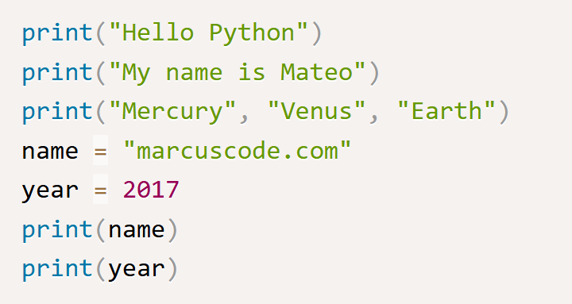
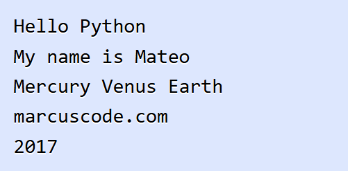
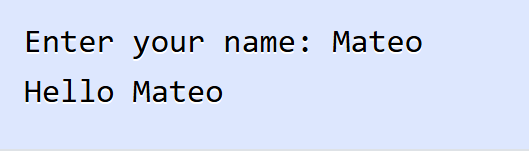

ในบทนี้ คุณจะได้เรียนรู้เกี่ยวกับการรับค่าและการแสดงผลพื้นฐานในภาษา Python ซึ่งเป็นสิ่งสำคัญที่โปรแกรมต้องมีสำหรับการติดต่อกับผู้ใช้ การรับค่าคือการรับข้อมูลจากภายนอกโดยทั่วไปแล้วมักจะเป็นการรับค่าทางคีย์บอร์ด ส่วนการแสดงผลนั้นจะเป็นบน Console ถ้าหากคุณรัน Python บนเว็บเซิฟเวอร์ การแสดงผลจะเป็นทางเว็บบราวน์เซอร์แทน และการรับค่าจะเป็นทาง URI หรือเว็บฟอร์ม
ในการแสดงผลในภาษา Python นั้นจะใช้ฟังก์ชัน print() เพื่อแสดงผลข้อความ ตัวเลข หรือข้อมูลประเภทอื่นๆ ออกทางหน้าจอหรือสร้าง Http response นี่เป็นรูปแบบของการใช้งานฟังก์ชัน print() ในภาษา Python
ในรูปแบบการใช้งาน ฟังก์ชัน print() เราสามารถส่งอาร์กิวเมนต์ได้ตั้งแต่หนึ่งถึงหลายตัวเข้าไปในฟังก์ชัน นอกจากนี้ฟังก์ชันยังมี keyword อาร์กิวเมนต์ sep ซึ่งเป็นตัวแบ่งหากอาร์กิวเมนต์ที่ส่งเข้าไปนั้นมากกว่า 1 ตัว ซึ่งมีค่า default เป็น whitespace และ keyword อาร์กิวเมนต์ end เป็นการแสดงผลในตอนท้ายของฟังก์ชัน ซึ่งมีค่า default เป็น \n หมายถึงการขึ้นบรรทัดใหม่ มาดูตัวอย่างการใช้งานฟังก์ชัน
ในตัวอย่าง เป็นการแสดงผลในภาษา Python โดยในคำสั่งแรกและคำสั่งที่สองนั้นเป็นการแสดงข้อความ และในคำสั่งที่สามเป็นการส่งค่า แบบหลายอาร์กิวเมนต์ และในสองคำสั่งสุดท้ายเป็นการแสดงผลข้อมูลจากตัวแปร name และตัวแปร year
นี่เป็นผลลัพธ์การทำงานของโปรแกรม
นอกจากการแสดงผลแล้วนั้น การติดต่อกับผู้ใช้ในอีกรูปแบบหนึ่งคือการรับค่า โดยทั่วไปแล้วมักจะเป็นการรับค่าทางคีย์บอร์ด ในภาษา Python เราใช้ฟังก์ชัน input() สำหรับการรับค่า String จากทางคีย์บอร์ด มาดูตัวอย่างการรับค่าจากผู้ใช้ในภาษา Python
ในตัวอย่าง เป็นสำหรับการรับค่าชื่อจากคีย์บอร์ดและแสดงข้อความทักทายชื่อดังกล่าว ฟังก์ชัน input() เราได้ส่งอาร์กิวเมนต์เข้าไปในฟังก์ชันเพื่อเป็นข้อความบอกวิธีการใส่ค่ากับผู้ใช้ ฟังก์ชันจะส่งค่ากลับเป็น String ที่ผู้ใช้กรอกเข้ามาและจบการรับค่าด้วยการขึ้นบรรทัดใหม่ โดยที่ \n จะถูกตัดออกไป
นี่เป็นผลลัพธ์การทำงานของโปรแกรม โดยเราได้กรอกชื่อ "Mateo" และโปรแกรมแสดงข้อความทักทายทางหน้าจอ